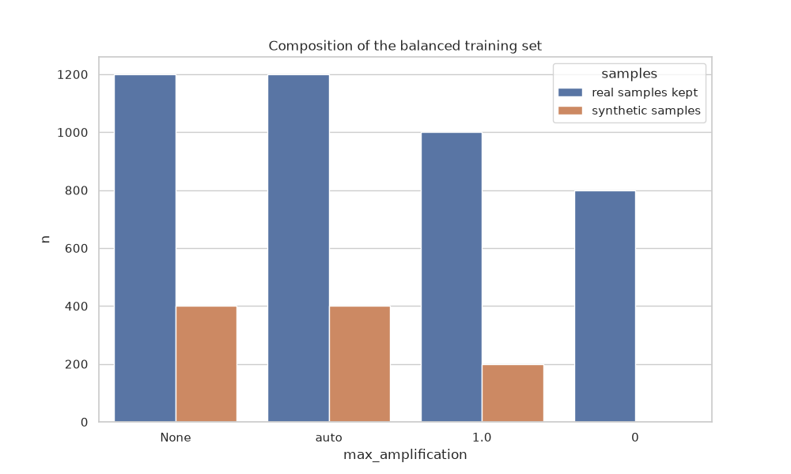

Note
Go to the end to download the full example code.
IntraSiteInterpolation advance usage#
Interpolation cannot create information: a handful of samples cannot be interpolated into thousands. ISI measures,
for every class it over-samples, how much of the class variance interpolation keeps, and warns when balancing needs more
synthetic samples than is safe. ISI only interpolates; SiteBalancedResampler combines it with under-sampling: it
limits interpolation (max_amplification) and closes the remaining imbalance with an under-sampler, so both meet in
the middle.
Imports#
import matplotlib.pyplot as plt
import numpy as np
import pandas as pd
import seaborn as sns
import sklearn
from imblearn.pipeline import Pipeline
from sklearn.linear_model import LogisticRegression
from sklearn.model_selection import StratifiedKFold, cross_validate
from uniharmony import verbosity
from uniharmony.datasets import make_multisite_classification
from uniharmony.interpolation import IntraSiteInterpolation, SiteBalancedResampler
sns.set_theme(style="whitegrid")
verbosity("warning")
X, y, sites = make_multisite_classification(
n_sites=3,
n_samples=[400, 400, 400],
n_features=5,
balance_per_site=[[0.8, 0.2], [0.5, 0.5], [0.3, 0.7]],
random_state=23,
)
How much interpolation is safe?#
ISI only over-samples and never removes a sample. For every class it over-samples, it measures the ratio
between the variance of the synthetic and of the real samples (variance_ratio, rho) and derives the safe
amplification: the number of synthetic samples per real sample that keeps at least 80% of the class variance
(variance_tolerance=0.2). If balancing needs more, ISI warns. summary() reports it for every site and class.
isi = IntraSiteInterpolation(interpolator="smote", random_state=42)
X_bal, y_bal = isi.fit_resample(X, y, sites=sites)
isi.summary().round(2)
The same diagnostic is available without resampling, to check a data set before choosing a method.
isi.estimate_safe_amplification(X, y, sites).round(2)
Combining interpolation with under-sampling#
SiteBalancedResampler limits the amplification of every class to max_amplification and under-samples the
larger classes of the site (with ClusterCentroids by default) to meet the smaller ones. Different caps give different
trade-offs: None is ISI alone, "auto" (default) uses the safe amplification, 0 only under-samples.
rows = []
for cap in [None, "auto", 1.0, 0]:
sbr = SiteBalancedResampler(IntraSiteInterpolation("smote", random_state=42), max_amplification=cap, random_state=42)
_, y_cap = sbr.fit_resample(X, y, sites=sites)
report = sbr.summary()
rows.append(
{
"max_amplification": str(cap),
"real samples kept": int((report.n_real - report.n_removed).sum()),
"synthetic samples": int(report.n_created.sum()),
}
)
df = pd.DataFrame(rows).melt(id_vars="max_amplification", var_name="samples", value_name="n")
plt.figure(figsize=[10, 6])
plt.title("Composition of the balanced training set")
sns.barplot(df, x="max_amplification", y="n", hue="samples")

/home/runner/work/UniHarmony/UniHarmony/examples/04-interpolation-based/03-plot_isi_advance_usage.py:70: UserWarning: Site 0: with the amplification cap (max_amplification=0) its classes can only be brought to 80 samples each, so 240 of its 400 real samples are removed by under-sampling (class counts: 0=320, 1=80). Consider excluding this site or relaxing `max_amplification`.
_, y_cap = sbr.fit_resample(X, y, sites=sites)
<Axes: title={'center': 'Composition of the balanced training set'}, xlabel='max_amplification', ylabel='n'>
Global balancing#
balance_strategy="global_max" balances every site towards the largest class of any site, so sites also get
similar sizes. Small sites then need much more interpolation, which the variance diagnostic may flag.
isi_global = IntraSiteInterpolation(balance_strategy="global_max", random_state=42)
_, y_global = isi_global.fit_resample(X, y, sites=sites)
print(f"Global target count: {isi_global.target_count_}, per site: {isi_global.target_counts_}")
Global target count: 320, per site: {np.int64(0): 320, np.int64(1): 320, np.int64(2): 320}
Choosing the samplers#
Any imblearn over-sampler can be used to interpolate, and any under-sampler that selects real samples and accepts a
target count per class can be used by SiteBalancedResampler.
sbr_nm = SiteBalancedResampler(
IntraSiteInterpolation(interpolator="borderline-smote"), undersampler="nearmiss", max_amplification=1.0
)
X_nm, y_nm = sbr_nm.fit_resample(X, y, sites=sites)
print(sbr_nm.target_counts_)
/home/runner/work/UniHarmony/UniHarmony/examples/04-interpolation-based/03-plot_isi_advance_usage.py:105: UserWarning: IntraSiteInterpolation: 1 class(es) are too small, compared with the largest class of their site, to be balanced by interpolation while keeping their variance (variance_tolerance=0.2). Most of their samples are synthetic and the class shrinks towards its centre:
site 2, class 0: 120 real -> 240 samples (1 synthetic per real sample, 50.0% of the class); safe up to 0.27 per real sample (about 32 synthetic samples); the class keeps about 53% of its variance (rho=0.06).
With many features, models can also fit the few real samples of these classes one by one, so part of the site-target association remains (see the Notes of IntraSiteInterpolation). Lower `max_amplification` (or use 'auto', the safe amplification) to interpolate less and under-sample more.
X_nm, y_nm = sbr_nm.fit_resample(X, y, sites=sites)
{np.int64(0): 160, np.int64(1): 200, np.int64(2): 240}
Covariates#
Covariates restrict who is interpolated with whom: synthetic samples are interpolated between samples of the same class, site and covariate stratum (here sex and three age bins), and are spread over the strata like the real samples of their class.
rng = np.random.default_rng(54)
sex = rng.integers(0, 2, len(y))
age = rng.normal(50, 10, len(y))
isi_cov = IntraSiteInterpolation(n_bins_cont_cov=3, random_state=42)
X_cov, y_cov = isi_cov.fit_resample(X, y, sites=sites, categorical_covariate=sex, continuous_covariate=age)
# The covariates of the real samples kept can be recovered with ``sample_indices_``
real = ~isi_cov.is_synthetic_
sex_kept = sex[isi_cov.sample_indices_[real]]
Use on training data only#
ISI must only see the training folds. Put it in an imblearn pipeline and route sites with scikit-learn
metadata routing.
with sklearn.config_context(enable_metadata_routing=True):
isi_cv = IntraSiteInterpolation(random_state=0).set_fit_resample_request(sites=True)
pipe = Pipeline([("isi", isi_cv), ("clf", LogisticRegression())])
cv = StratifiedKFold(5, shuffle=True, random_state=0)
scores = cross_validate(pipe, X, y, cv=cv, params={"sites": sites}, scoring="roc_auc")
print(f"CV AUC with ISI inside the folds: {scores['test_score'].mean():.3f}")
CV AUC with ISI inside the folds: 0.989
Total running time of the script: (0 minutes 1.066 seconds)